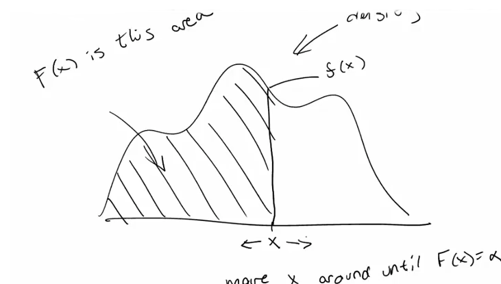

values taken at regular intervals from the CDF-inverse
motivation: dividing ordered data into essentially equal-sized subsets
values marking the boundaries between consecutive subsets
\(\alpha^{th}\) quantile
The \(\alpha^{th}\) quantile fo a distribution with cumulative distribution function \(F_X\) is the point \(x_{\alpha}\) so that
$$F_X(x_{\alpha}) = \alpha$$

Ilustrating the CDF-inverse searchWhen a quantile come from a distribution it is refering to the population. When comes from sample it is the estimator of the population estimand.
Percentile
simply a quantile with \(\alpha\) expressed as percent